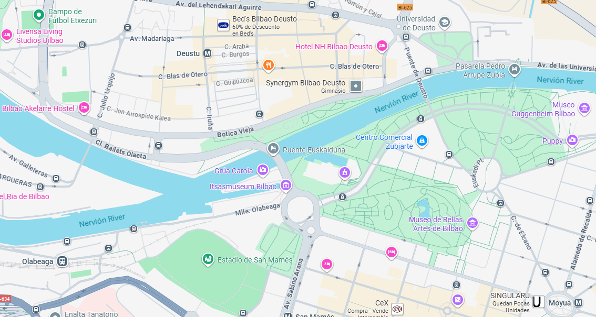

Contacto - Gran Premio de Euskadi 2026
Consulta la ubicación y la información de contacto del Gran Premio de Euskadi de Fórmula 1 2026, celebrado en Bilbao.
Lugar de la Carrera
Nombre: Gran Premio de Euskadi de Fórmula 1
Ciudad: Bilbao, Bizkaia
Dirección: Deusto, 48014 Bilbao, España
Ver ubicación en Google MapsTeléfonos de Contacto
Teléfono: +34 944 751 091
Soporte: +34 944 763 182
Si necesitas información sobre el Gran Premio de Euskadi 2026, las entradas o cualquier otra consulta relacionada con el evento, puedes contactar con nosotros.
Ubicación en el Mapa
El Gran Premio de Euskadi 2026 tendrá lugar en Bilbao, en la zona de Deusto. Consulta el mapa para conocer su ubicación.
